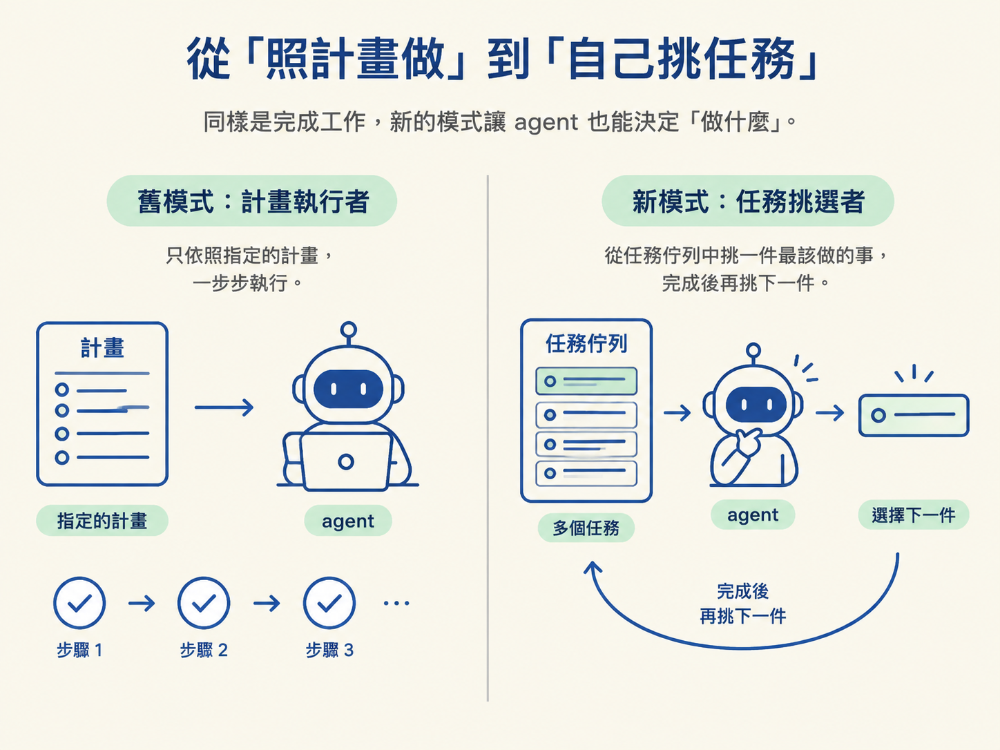
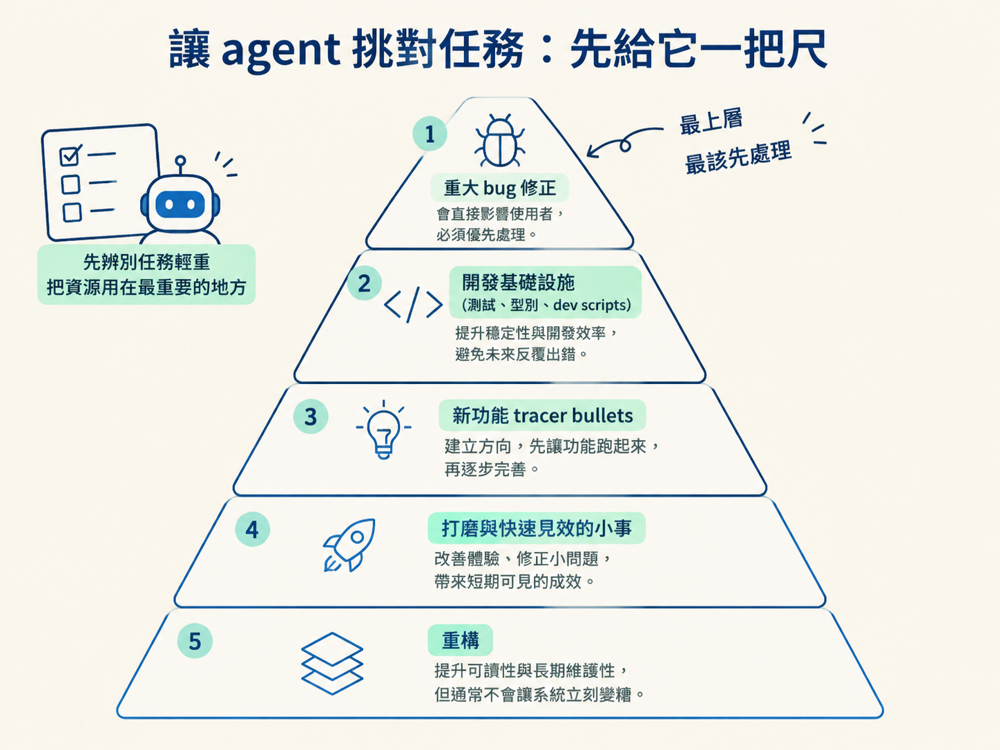
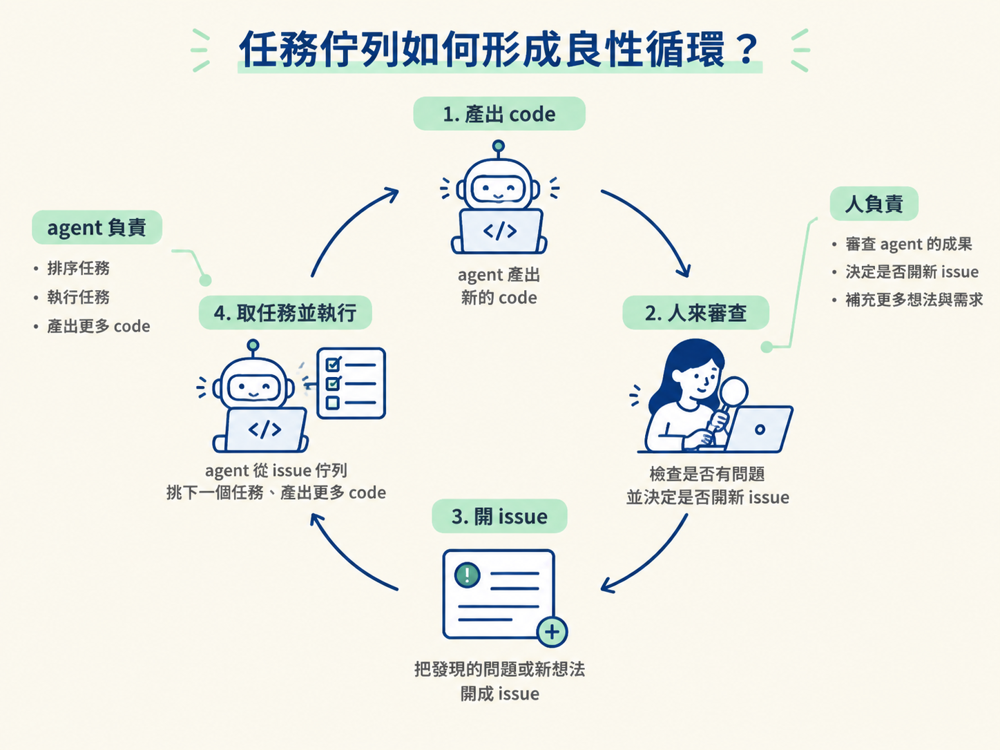

想像你有一個會自己工作好幾輪的 agent。它能讀 PRD、照著 plan 寫 code，完成後再跑測試。聽起來已經很接近「放著讓它跑」了，但每次啟動前，你仍然得親自告訴它：「今天做這一份計畫。」
手上的工作一旦從一份計畫變成三個 PRD、五個小 bug，還有一堆「有空再整理」的測試債，這個做法就開始卡住。agent 能加快執行，卻不會自己回頭看下一件該做的事。
這一節要看的，就是如何把輸入從「一份指定的計畫」換成「一整條任務佇列」，讓 agent 不只會做事，也能挑選下一件事。這一步，是從自動執行走向半自主工作流程。
完成本節後，你應該能理解：為什麼要把指定 PRD 與 plan 的模式，改成讓 agent 自己從佇列挑任務；知道五級任務優先序；也能判斷這種做法適合多大的任務規模。
上一節的 AFK 迴圈會讀一份 PRD 和一份 plan，按照順序完成還沒做的階段，全部跑完就停止。這個模式很適合執行一件已經規劃好的工作，但有個明顯的限制：你仍然要在每次開始前指定它要做哪一份計畫。
因此，舊模式裡的 agent 比較像計畫執行者。你，或另一個規劃階段，決定要做什麼、按照什麼順序做；agent 負責思考「怎麼做」。它有執行上的自由，卻沒有選題的自由。
新模式則把輸入換成一條任務佇列。agent 每次從佇列裡挑一件最該做的事，完成後再回頭挑下一件。它不只決定「怎麼做」，也開始參與決定「做什麼」。

這裡說的佇列，實務上就是 issue tracker。這門課使用 GitHub issues，但工具本身不是重點。任務必須放在一份可以查詢、挑選，也能在完成後收尾的清單裡。
把整疊任務交給 agent，最需要小心的是它可能挑錯。不能只對它說「找一件重要的來做」，再期待它和你有同樣的判斷。你需要在任務選擇 prompt（task-selection prompt）裡明確寫出優先序，讓它每次選任務時都有一把固定的尺。
這門課採用五級優先序，從最該先處理的工作開始：
| 順位 | 類型 | 為什麼排在這裡 |
|---|---|---|
| 1 | 重大 bug 修正（critical bug fixes） | 系統已經壞了，其他事做得再多，都像在漏水的船上刷油漆。 |
| 2 | 開發基礎設施（測試、型別、dev scripts） | 可靠的回饋迴圈是後續功能的地基，沒有它，做出的結果就難以確認。 |
| 3 | 新功能的 tracer bullets | 先做出能看見的功能切片，讓進度更早得到回饋。 |
| 4 | 打磨與快速見效的小事（polish / quick wins） | 這些工作不急，但完成後能改善使用體驗。 |
| 5 | 重構（refactors） | 通常很有價值，卻最不急，可以等前面的事情穩定後再處理。 |
這份排序，其實就是技術主管每天在腦中做的判斷。假設桌上有三張票：一張是「首頁在手機上整個跑版」，一張是「專案沒有測試」，另一張是「把某個函式重寫得更乾淨」。你不會先做重構，因為它明天再做通常也不會讓系統更糟；你會先處理會直接影響使用者或開發可靠性的問題。

其中第二級特別容易被低估。測試、型別檢查和 dev scripts 看起來不像新功能，卻是 agent 能不能可靠工作的基礎。沒有可靠的測試與型別檢查，agent 產出的每一段 code 都只能靠你用眼睛檢查。那樣一來，你還是得被綁回電腦前，所以基礎設施應該排在新功能之前。
讓 agent 自己從任務中排序，在大約 20 到 30 件任務的規模內運作得不錯。清單再繼續膨脹，任務本身就會變成新的負擔：agent 要從太多背景不同、狀態不同的 issue 裡找出下一件事，判斷品質也會跟著下降。
這時可以用篩選條件，把「現在真的準備好要動」的任務挑出來。例如使用 GitHub labels（標籤），只讓 agent 查看貼有 ready-for-agent 的 issue。另一種方式是使用指派（assignee）：被指派給自己的 issue 代表已經進入待辦，沒有被指派的任務則先略過。
兩種方式的精神相同：不要讓佇列無限膨脹，只把目前要推進的那一段交給 agent。
這套做法也用在 Sandcastle 的開發上。它的 repo 累積了四百多張已關閉的 issue，並透過 ready-for-agent 標籤，標記哪些任務已經可以交給 agent 處理。
agent 能自己從佇列挑任務之後，工作流程就不再是「你指定一份計畫，agent 做完後停止」。它會變成一個持續接續的循環：
agent 產出 code → 人來審查 → 把發現的問題或新想法開成 issue → agent 再從 issue 佇列挑下一個任務、產出更多 code。
在這個循環裡，你主要保留最需要人判斷的部分：review agent 的成果，然後決定是否要開新的 issue。任務的排序與執行，則交給 agent 處理。如此一來，你不必每次都親自挑下一個工作，而是可以同時推進多條工作線。

不過，任務選擇 prompt 不是寫好一次就永遠不變。專案剛開始時，通常更需要先補齊基礎設施、讓主要流程站起來；進入穩定階段後，優先順序可能轉向打磨與重構。同一套規則放在不同時期，挑出的下一步也可能不同，所以要隨著專案狀態重新檢視、調整。
把 AFK 迴圈的輸入從「一份指定計畫」換成「一條任務佇列」後，agent 就從單純的計畫執行者，變成能自己挑選下一個任務的執行者。
它並不是毫無限制地自由決定，而是依照任務選擇 prompt 中寫好的優先序工作：重大 bug、開發基礎設施、新功能的 tracer bullets、打磨與快速見效的小事，最後才是重構。這套模式在 20 到 30 件任務的範圍內最合適；任務更多時，則用 label 或指派把佇列縮小。
把 AFK 迴圈接上任務佇列，真正改變的不是「一次可以做更多事」，而是 agent 開始參與判斷下一步。人負責審查與補充 issue，agent 負責依照優先序持續挑選和執行，兩者就形成一個會自己轉動的工作循環。
知道要讓 agent 自己挑任務後，下一個實際問題就是：這些 issue 要放在哪裡？如果直接沿用課程 repo，或隨手 fork 一份，可能會遇到什麼限制？下一節會先處理這個前置工作，準備一個只有你能動、agent 能安全取用的私有 issue repo。